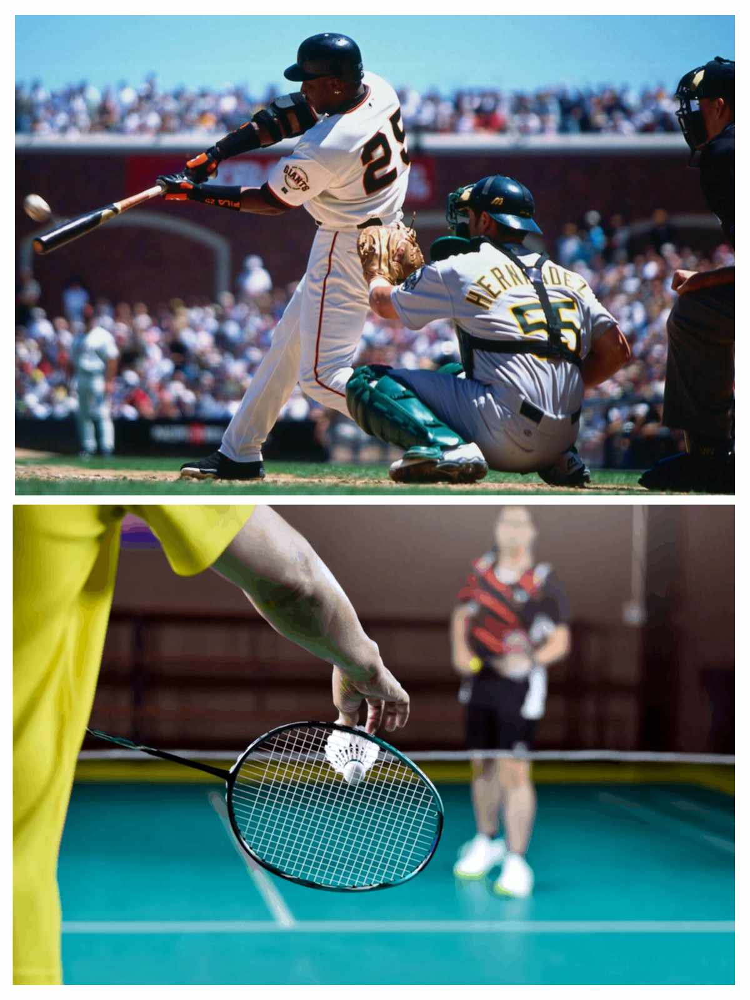

Hello! I'm Erold E. Gajonera
I am Currently student at Quezon City University, 1st year college of Bachelor Science of Information Technology. I am also graduate at Quezon City High School as Humss student. If your gonna ask me why i choice Humss because i want to enhance my comminucation skill and public speak. My status in life is single, 18 years old and I am Member church of God international(MCGI).
My top 3 favorite music
1. Misteryoso By Cup of Joe
2. 14 By Silent Sanctuary
3. Paper Rings by Taylor Swift
My Sports
Badminton and Baseball
